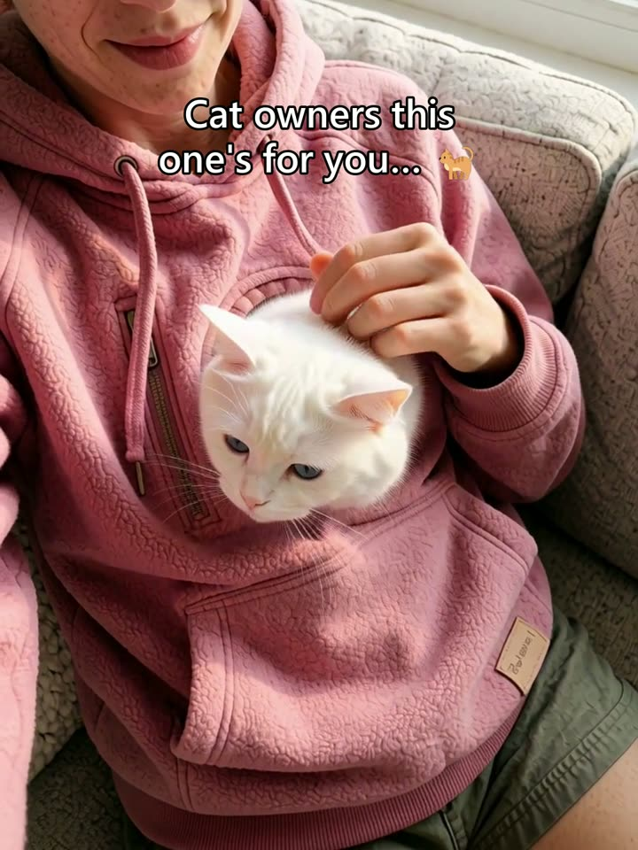
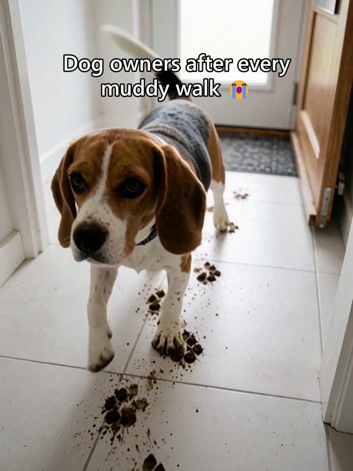
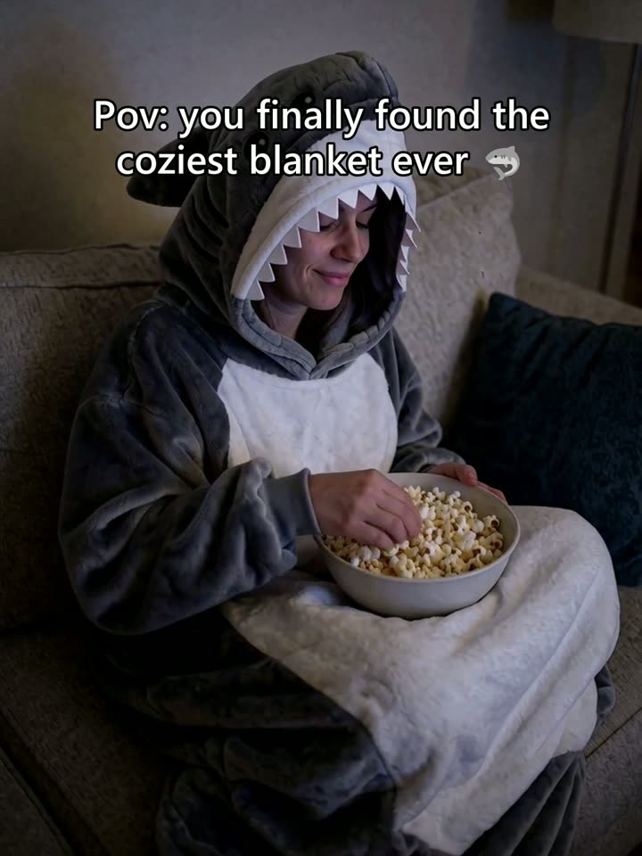

Short-form video ads and static ads, edited or generated, fast.
Jump cuts, captions, text overlays and B-roll for ads cut from your footage, including sponsored ads approved by Perplexity and Wix. AI video and static ads when there is no footage.


Video ads from real footage
Hook first, jump cuts, captions, text overlays and B-roll.
Sponsored ads for Perplexity
Perplexity, Facebook ads with George Cordon, 2026. Eight ads cut from real footage: one body, a different hook on each, approved by Perplexity. Three are shown here.


Sponsored ads for Wix
Symphony by Wix, creator ads with George Cordon, 2026. One product review with three hooks, delivered in 16:9, 9:16 and 4:5, approved by Wix. The 9:16 versions are shown here.


Raw to final
George Cordon, ecommerce YouTube, 2026. Every long-form episode of the year, plus the channel's Shorts and Reels. Raw is on the left and what I delivered is on the right.


AI video ads
No footage needed. Presenter, voice, product shots and edit, all generated.


Product and property reels

AI-generatedPet carrying hoodie
AI-generatedDog paw cleaner
AI-generatedWearable shark blanket AI-generatedA home that isn't built yet
AI-generatedA home that isn't built yet
Product reels are silent 3:4 and made with AI for fictional brands. The property reel is 9:16 with sound.
Spec pieces for fictional brands, generated with AI. I generate on my own RTX 4090 and with Higgsfield, so extra versions are quick to make.
Static ads
Before and after, benefits, lifestyle, problem and solution.


Static ads for fictional brands, generated and designed with AI.
Short-form that holds attention
Hook-first cuts with word-by-word captions, B-roll and sound design.
 George Cordon · ShortMost jobs stop paying
George Cordon · ShortMost jobs stop paying
 George Cordon · ReelGlobal e-commerce in 2026
George Cordon · ReelGlobal e-commerce in 2026
 George Cordon · ShortOrganic content isn't enough
George Cordon · ShortOrganic content isn't enough
 Baytree Cars · 2.5M viewsThis or That: luxury car edition
Baytree Cars · 2.5M viewsThis or That: luxury car edition
 Baytree Cars · 2.2M viewsThis or That: Ferrari edition
Baytree Cars · 2.2M viewsThis or That: Ferrari edition
Client work shown with permission. The two Baytree Cars shorts passed 2.5M and 2.2M views and are still that channel's two most-viewed videos.
I edit for an ecommerce channel every week.
George Cordon, ecommerce YouTube, 2026. Every long-form episode of the year, plus the channel's Shorts and Reels.
- Hook in the first three seconds.
- Show the problem before the product.
- Captions on, so it works with the sound off.
- One idea per ad.
- Several versions of every concept, so you can test.
How I'd work with you
Brief in, first ads out, then batches.
Day 1
Brief and assets
You send the offer, any footage, and ads you like the look of.
Days 1 and 2
First ads
One concept built three ways, video and static, so you can see which opening works.
After that
Batches
You tell me which ad won. I make more of that and retire the rest.
What you get with each ad
Standard- Video sizes
- 9:16, 4:5 and 1:1
- Captions
- Burned in, plus a clean version
- Statics
- Feed and story sizes
- First ad
- Within 48 hours of the brief
Tools and background
- Editing
- Premiere Pro, DaVinci Resolve, After Effects
- AI video
- ComfyUI pipelines on my own RTX 4090, Higgsfield
- Graphics
- Photoshop, Illustrator
- Clients
- George Cordon (ecommerce YouTube), Baytree Cars
Tell me what you're advertising. I'll send back the first ad.
Contracts and payments go through Upwork.